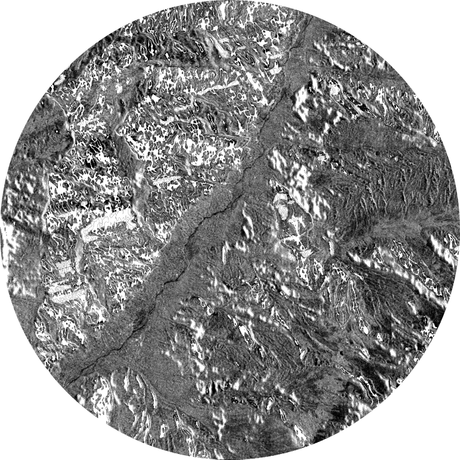
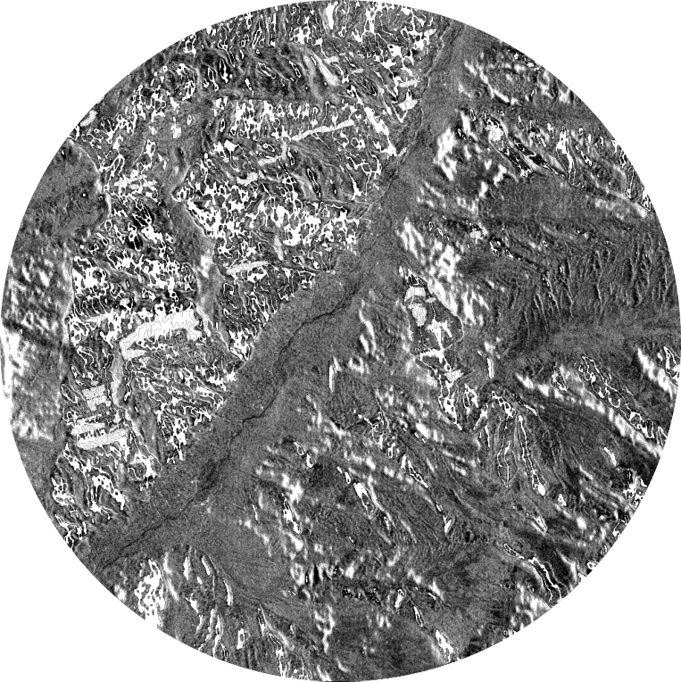
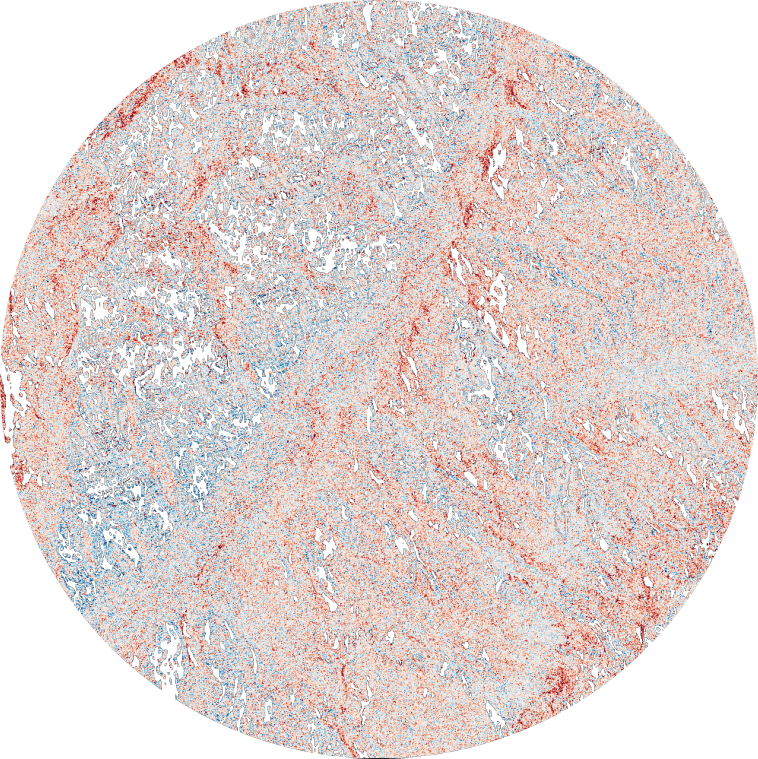

Candidate flood area
0.0278 km²
Low confidence · unvalidated
How this was measured ↗EARTH OBSERVATION · UPPER KOHISTAN · PAKISTAN
AAB compares two same-track NISAR L-band radar scenes from 14 and 26 July 2026. It maps candidate flood change from the 22 July 2026 flash flood in Kandia Gol, Upper Kohistan. It states what the data cannot prove as plainly as what it shows.
01 / ANALYSIS READOUT
Four figures frame the result: a small candidate flood area, a much larger uncertain-change area, the observation gap, and the scene-pair check.
Candidate flood area
0.0278 km²
Low confidence · unvalidated
How this was measured ↗Uncertain surface change
11.56 km²
Radar got brighter; not counted as flood
Why it is uncertain ↗From flood peak to post-event scene
4 days
22 July event, 26 July scene
The observation gap ↗Scene pair valid
PASS
Same track, frame and direction
Pair check ↗Candidate results, not confirmed floodwater. Values are presented with their confidence and validation limits.
02 / SATELLITE EVIDENCE
Explore the supplied NISAR radar images behind the comparison. Switch layers or move the divider to inspect the before-and-after scenes.



03 / EVENT CHRONOLOGY
The satellite observations are not simultaneous with the flood peak. The dates shape what this analysis can and cannot say.
14 JUL 2026
NISAR L-band radar observation used as the pre-event reference.
22 JUL 2026
Flash flood in Kandia Gol, Upper Kohistan.
26 JUL 2026
NISAR L-band radar observation, four days after the flood peak.
04 / INTERPRETATION
The analysis separates candidate flood signals from uncertain surface change instead of treating every radar difference as inundation.
Understand the method ↗A small mapped candidate area is retained with low confidence and remains unvalidated.
Radar-brightening is not counted as flood because the signal may reflect other surface changes.
The post-event scene was acquired four days after the event peak, when standing water may have receded.
Scientific boundary: Candidate results are not confirmed floodwater. The analysis describes what the available radar observations support and keeps uncertainty visible.
Read limitations ↗05 / CONTINUE THE INVESTIGATION
The homepage is the entry point. Explore the report, processing method, source material and project context.